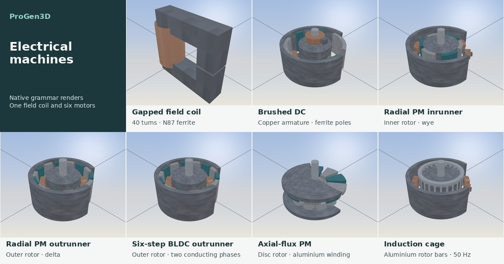

Axial Flux
engineering/electrical-machinesAxial-flux machine example for studying rotor/stator arrangement and axial magnetic topology.
Evidence 55/100 · Visual match unmeasured
9 distinct grammar versions

Axial-flux machine example for studying rotor/stator arrangement and axial magnetic topology.
Evidence 55/100 · Visual match unmeasured
Brushed DC machine model for inspecting rotor, stator and commutation arrangement.
Evidence 55/100 · Visual match unmeasured
Field-coil example with a gapped magnetic circuit.
Evidence 55/100 · Visual match unmeasured
Induction machine cage geometry study.
Evidence 55/100 · Visual match unmeasured
Induction motor spin-up demonstration; inspect transient response in the matching runtime.
Evidence 55/100 · Visual match unmeasured
Radial-flux inrunner machine, with rotor inside the stator.
Evidence 55/100 · Visual match unmeasured
Radial-flux outrunner machine, with rotor outside the stator.
Evidence 55/100 · Visual match unmeasured
Reaction-wheel example for angular momentum transfer studies.
Evidence 55/100 · Visual match unmeasured
Six-step commutated outrunner example for electrical-machine operation.
Evidence 55/100 · Visual match unmeasured